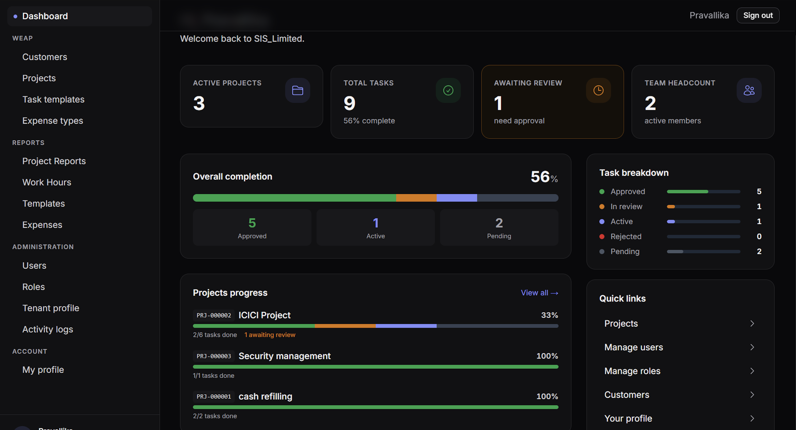

FMS is we2systems' field and workforce management platform — real-time location tracking, people management, time & attendance and task accountability in one operating view.
One workforce. One view. Every site connected.
Field Tracking
People Management
Time & Attendance
Task Management
Industries with distributed field teams — construction, manufacturing, logistics, utilities and facilities — struggle with the same gap: no real-time visibility into where people are, what they're doing, or whether the work got done.
Supervisors find out where a crew is and what they're working on only when someone calls in — long after the moment it mattered.
Paper timesheets and end-of-week reconciliation lead to disputed hours, missed overtime, and slow, error-prone payroll cycles.
Without a shared task log, it's hard to confirm what was assigned, what was completed, and who is responsible when something is missed.
FMS is being built as a single operating view of your field workforce — location, people, time and tasks — so supervisors and back-office teams see the same picture without chasing calls or paperwork.
Concept Preview
In DevelopmentCrew #4 — Site B, Zone 2
Checked in 08:02 AM · 6 workers on site
Task: Foundation inspection
Assigned to R. Fernandez · Due 2:00 PM
Shift clock-in
18 of 22 workers clocked in on time
Geo-fence alert
Vehicle #12 left designated zone · 9:41 AM
FMS is being designed for industries where people, time, location and task completion need to be tracked and managed in real time.
Real-time location and movement tracking for field teams, vehicles, and assets. Know where your workforce is and what they are working on at any point in the day.
Manage your workforce from a single dashboard — profiles, roles, assignments, skill sets, and performance records for every team member in the field or back office.
Automated clock-in and clock-out for field and site workers. Track shift timings, break durations, overtime, and compliance against scheduled hours — without manual timesheets.
Assign, track and close field tasks from a central operations view. Workers receive tasks on mobile, mark progress in real time, and supervisors get instant visibility on completion status.
Industries FMS Is Being Built For
FMS is being designed as a cross-industry workforce platform — starting with industries where field visibility, time accuracy and task accountability directly affect operational outcomes.
Beyond the workforce workflows, FMS is engineered as a secure, multi-tenant platform from day one.
Customers → Sites → Projects → Tasks, mapped end to end.
Every state-changing action across every module is logged — full traceability for compliance and internal review.
From the live FMS portal

FMS is under active development. Here's how we're rolling it out.
Core capabilities — field tracking, people management, time & attendance and task management — are being built on the Pralink platform.
A small set of design partners across construction, manufacturing and logistics will pilot FMS in real field conditions and shape the roadmap.
Broader rollout across industries, informed directly by what pilot partners need from day-to-day field operations.
Tell us about your field operations and we'll reach out when an early access slot opens for your industry — no commitment required.
Request received!
Our team will be in touch within 1 business day.
FAQ
What field and operations teams ask before signing up.
Not yet as a general release. FMS is in active development, and we're inviting a limited number of early access partners to pilot the platform in real field conditions before wider rollout.
We're starting with industries that run distributed field teams — construction, manufacturing, logistics, utilities and facilities — where location, time and task tracking directly affect operations.
Location data is collected only during working hours through the FMS mobile app, encrypted in transit and at rest, and governed by role-based access control on the same secure infrastructure we2systems runs for enterprise clients.
Yes — an open integration layer for HR and payroll systems is part of the platform design, so time & attendance data can flow into your existing payroll process rather than requiring a manual export.
Submit your details through the early access form above. We're onboarding a limited number of design partners at a time and will reach out directly as slots open for your industry.